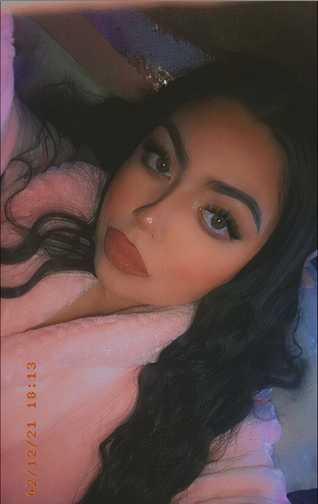

♡ About Me ♡
My name is Gabriela Vargas. I am a Mexican and Lipan Apache Native American, and I was born and raised in Eastside San Jose, California. I aspire to become a Creative Art Director and Merchandise/Album Cover Artist for rappers, singers, and other musicians. Creative directors that I primarily look up to are Joe Perez, Tal Midyan, BRTHR and film director, Quentin Tarantino. From looking at these amazing artists, I’ve ventured in becoming and pursuing the success that they achieved, and I strive to become an inspiration to someone in return.
Another person that has been crucial to my path on becoming an artist is my grandfather. He wanted to become a cartoonist as a young child but could not pursue it due to obstacles that he faced as a Mexican immigrant. He gave up his dream in order to provide for himself and his new family. I want to pursue his dream after I obtained his artistic talent, which he received from his mother who painted in her free time. Little did my grandfather know, his only granddaughter would go to college to pursue her desire in becoming an artist, to follow in his footsteps. I am extremely grateful and privileged to become my ancestors’ wildest dreams. As someone who was raised to be proud of where and who I came from, I will always continue to endeavor my vision as an artist, especially after knowing what my ancestors have gone through.
My passion for Digital Media began when I found myself dazed in watching music videos on MTV and on YouTube at an early age. I became a fan of these artists and found myself falling in love with album cover art and the tendency for wanting to buy their merchandise. In middle school, I practiced drawing with colored-pencil and painting in acrylic. I then found myself dabbling in graphic design once I was exposed to Adobe Photoshop, where I began to make mock-up album covers and graphic design posters for my high school. When I was 15, my favorite artist, Zayn Malik, Ex-One Direction member, noticed my fan-art that I made of his and obtained 8 million views on Twitter. This not only made me feel very lucky and special, but finally gave me the reassurance that I was headed for success. As the years have gone by, I’ve found myself working hard to fulfill these dreams and to make myself proud.
My work focuses on surreal, spiritual and conceptual ideas based on my Catholic Indigenous-American background. In other words, I paint both dreams and,what I consider, reality. People like me who live in a Latino household experience emotional trauma, generational curses and lack of emotional intelligence, which often makes others feel lost. My artworks demonstrate the relationship I've mended within myself through growth and healing. They also play an important role as a gift of assurance for my audience, that they are not alone.